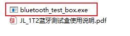
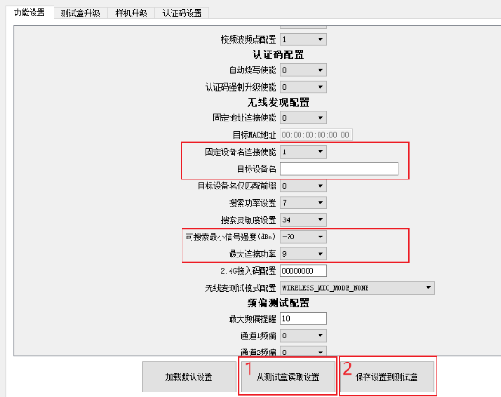
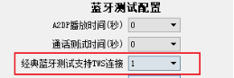
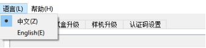

3.2. PC Tool Configuration and Use
3.2.1. Opening and using the PC tool
Power on the test box, connect it to the PC with a USB data cable and put the test box into
LOADINGmode, as shown in the figure Test box entering LOADING mode
[1] Power the test box with a 9V power adapter[2] Plug in the PC slave cable
[3] Set the toggle switch that controls the main power to
ON[4]
**Press and hold** the rightmost function button on the test boxto enterLOADINGmode, i.e. PC mode

Test box entering LOADING mode
Open My Computer, find the CD drive shown below and click it to open it

When you open the CD drive, the window shown below appears. Double-click bt_test_box.exe to open it.
You can also copy this tool and the documents to the PC and run it from there.
The window below appears. [1] First click "Read settings from test box" (从测试盒读取设置); [2] then configure the settings, click "Save to test box" (保存到测试盒) and unplug the PC slave cable

Users often change the following 3 items:
Minimum searchable signal strength (可搜索最小信号强度): adjusts the distance within which devices are searched for; the smaller the number, the wider the range.
You can also set the name of the devices under test so that the test box connects only to them, making testing as fast as possible;
Change the maximum test power (测试最大功率): some devices connect more easily with a lower power.
3.2.2. Common function settings
1. Host MAC address (主机MAC地址): the Bluetooth address of this test box
2. Target MAC address (目标MAC地址): in fixed-address connection mode, the address of the Bluetooth device under test
3. Upgrade battery threshold (升级电量门限): the device is not upgraded if its battery level is below the set percentage
4. Fixed address connection enable (固定地址连接使能): when enabled, Bluetooth connects using a fixed address
5. Fixed device name connection enable (固定设备名连接使能): when enabled, Bluetooth connects using a fixed name
6. Match target device name prefix only (目标设备名仅匹配前缀): when enabled, Bluetooth devices whose names have the same prefix but different suffixes are matched
7. Automatic frequency offset correction enable (频偏自动校正使能): after the frequency offset is tested, the frequency offset of the target device is adjusted automatically
8. Maximum search power (搜索最大功率) setting
9. Maximum search sensitivity (搜索最大灵敏度) setting
10. Minimum searchable signal strength (可搜索最小信号强度), in db: controls the distance within which nearby devices are searched for
11. Maximum test power (测试最大功率) setting
12. Maximum frequency offset alert (最大频偏提醒): if the frequency offset of the tested device is greater than this value, the test box speaker sounds an alarm
13. Frequency correction (频率校正): the correction range. For example, if it is set to 10, the correction is complete when the frequency offset has been corrected to within -10k to +10k
If it is not within this range, a prompt tone alerts you
14. Channel 1 frequency offset (通道1频偏): the test box itself has a frequency offset, which must be entered here manually. For example, if channel 1 has a frequency offset of +2, enter 2 here; if it is -2, enter -2
15. Channel 2 frequency offset (通道2频偏): the test box itself has a frequency offset, which must be entered here manually. For example, if channel 2 has a frequency offset of +2, enter 2 here; if it is -2, enter -2
3.2.3. Configuring a fixed device name for wireless connection
Fixed device name connection configuration

Version V1.2.5.b and later add the "Match target device name prefix only" (目标设备名仅匹配前缀) option
This supports a different device name suffix for each device under test (for example, when the suffix consists of some characters of the MAC address)

3.2.4. Test time settings (normally no need to change)
A2DP playback time (A2DP播放时间): the duration of the advanced audio test. For example, if it is set to 5s, the box moves on to the next test mode 5s after advanced audio playback starts, ending the advanced audio test (range 0-255s; 0: switch manually)
Dialing ringtone time (拨号铃声时间):
During the call test, this is the simulated phone dialing time; when the set time expires, dialing ends and the call is simulated as connected (range 0-255s; 0: no dialing)
Auto-answer time (自动接听时间):
During the call test, this is the time for which the test box sends call test audio to the Bluetooth device; it then stops sending audio and starts the MIC test (range 0-255s; 0: no audio is sent and the MIC is tested directly)
MIC test time (mic测试时间):
During the call test, this is the MIC test duration; when the time expires, the MIC test ends (range 0-255s; 0: the MIC test does not end automatically and you must switch manually).
3.2.5. Enabling the Bluetooth connection prompt tone
When this option is 1, prompt tones are enabled: the test box plays the "connected" prompt tone when the Bluetooth connection succeeds and the "disconnected" prompt tone when Bluetooth disconnects. (The loaded default configuration is 1.)
When this option is 0, no prompt tone is played on connection or disconnection.
3.2.6. Enabling test item switching with the PP button
This option takes effect when the test box is connected to the target device for a classic Bluetooth test. Versions before V122 do not have this option. It is enabled by default.
When set to 1, pressing the PP button on the target device switches the test item (for example, from music playback to call, and from call to disconnect).
When set to 0, pressing the PP button on the target device during the music playback test only pauses and resumes playback and does not switch to the next test item. To switch to the next test item, press the corresponding button on the test box.
3.2.7. Switch for TWS connection support in classic Bluetooth tests

When this option is 0 and the test box connects to TWS earbuds, the connection between the TWS earbuds is broken by default. This setting is generally used when the MIC/speaker functions of each TWS earbud need to be tested individually.
When set to "1" and the test box connects to TWS earbuds, the connection between the TWS earbuds is kept by default; this setting lets you test the earphone functions while the TWS earbuds are connected. (Requires support in the corresponding SDK.)
3.2.8. Putting earphones into DUT mode in UART mode
TWS pair DUT mode enable (对耳进入DUT模式使能)
When this option is "1", it is mutually exclusive with "TWS pair test enable" (对耳测试使能), "TWS pair upgrade enable" (对耳升级使能) and "TWS pairing enable" (对耳配对使能); these options must be set to 0.
When set to 1, the test box periodically sends the enter-DUT command. If the target device firmware supports this command, the device enters DUT test mode when it receives the command, which speeds up searching and connection by the test instrument.
When set to 0, this function is disabled.
For usage instructions, see the section "Quick test method for TWS earphones in mass production"
3.2.9. Using the battery level threshold check for upgrades
Supports an upgrade battery level threshold check

This option supports the battery level check for UART upgrades and classic Bluetooth upgrades. The default threshold is 0 (i.e. no threshold check).
For example, if this option is set to 50% and the target device's battery level is below 50% when the upgrade starts, the error "Err: battery level below setting" (Err:电量低于设定) is reported.
You can configure a threshold of 0-70% as needed. 100% is intended for testing the error message.
3.2.10. Configuring the button action recognition test
Version V124f adds the button action recognition test option
When set to "1", after the test box connects to the device under test over classic Bluetooth, it enters the button action recognition test after the frequency offset test (if enabled) and the in-ear detection test (if enabled);
The tester must press or release the button as prompted on the test box screen ("Press" (按下) or "Release" (抬起));
When the LCD first shows "Press" (按下), the tester must press the button under test (defined by the software of the device under test) within 8s and hold it for at least 2s. When the press is detected, the LCD shows "√". If the button is released before "Release" (抬起) is shown, the LCD shows "Error" (错误).
Within 2s after the LCD shows "Release" (抬起), the tester must release the button. When this is detected, the LCD shows "√"; then make no new press for 2s. Perform the corresponding action again only after the LCD shows "Press" (按下) again.
Pass condition: the test passes when the "Press" (按下) and "Release" (抬起) actions have been completed twice as prompted on the LCD, and the box automatically switches to the next test item (such as the music playback test).
Timeout definition: if there is no action within 8s after "Press" (按下) is first shown, a timeout error is reported; after the first press is recognized, each subsequent prompted action must be completed within 2s, otherwise a timeout error is also reported;
When set to "0", this test item is disabled. The default value is "0".
3.2.11. Configuring in-ear detection calibration and testing
Version V1.2.4.f adds the in-ear detection calibration and test option
When set to "1", after the test box connects to the device under test over classic Bluetooth, it enters in-ear detection calibration and test mode once the frequency offset test (if enabled) is complete; the tester must perform the actions prompted on the LCD screen;
The LCD shows "In-ear detection trim:" (入耳检测trim:). If the calibration success command is received within 8s, "√" is shown; on failure, "Error" (错误) is shown. (Note: during calibration, keep the earphone in an insulated environment and do not touch the touch pad.)
The LCD shows "In-ear detection:" (入耳检测:). Within 5s, put the earphone in the ear and then keep still for 2s so that the calibration parameters can be checked. If everything is correct, "√" is shown; if "Error" (错误) is shown, there may have been a problem with the calibration, so calibrate again.
The LCD shows "Out-of-ear detection:" (出耳检测:). Within 5s, take the earphone out of the ear and keep it out for 2s for detection, so that the calibration parameters can be checked. If everything is correct, "√" is shown; if "Error" (错误) is shown, there may have been a problem with the calibration, so calibrate again.
Timeout definition: if calibration is not completed within 8s after "In-ear detection trim:" (入耳检测trim:) is first shown, a timeout error is reported; if there is no corresponding action within 5s after "In-ear detection:" (入耳检测:) or "Out-of-ear detection:" (出耳检测:) is shown, a timeout error is reported;
When set to "0", this test item is disabled. The default value is "0".
3.2.12. Configuring TWS pairing and testing
Version V130 adds a TWS pairing and test flow: after the earbud pair has been paired, the earbuds are automatically put into test mode.
To enable this function, turn on "Classic Bluetooth test supports TWS connection" (经典蓝牙测试支持TWS连接), "TWS pairing enable" (对耳配对使能) and "Test enable" (测试使能) together in the PC tool.


3.2.13. Configuring and using the out-of-case in-ear trim function for earphones
Version V1.2.6 adds the out-of-case in-ear trim function

Set to 1 to enable this function; in-ear trim is then performed. This requires support in the corresponding SDK.

Set to 1 to enable this function; after pairing is complete, the earphones power off automatically when taken out of the charging case. This also requires support in the corresponding SDK.
3.2.14. Language option
Version V124f adds the language option

When the tool is opened, this feature automatically detects the system language setting (Regional format) and displays the PC tool's interface in that language.
You can also select "Chinese" (中文) or "English" from the "Language" (语言) menu in the interface. If you then click "update config" (保存配置到测试盒) in the PC interface, the test box LCD also switches to the corresponding display language.
3.2.15. Configuring the calibration signal transmission mode
Version V1.2.5 adds the option for setting the calibration signal frequency point
This function requires the test box to be used together with the 1-to-8 programmer. For details, see the section "Batch frequency offset calibration during programming"